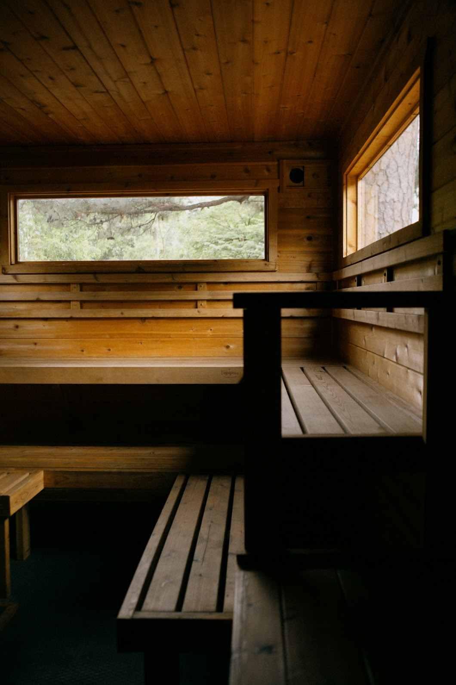
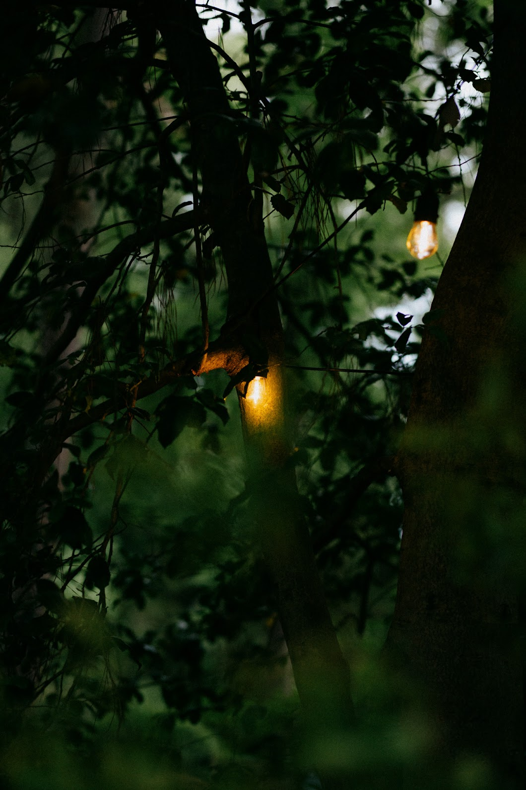
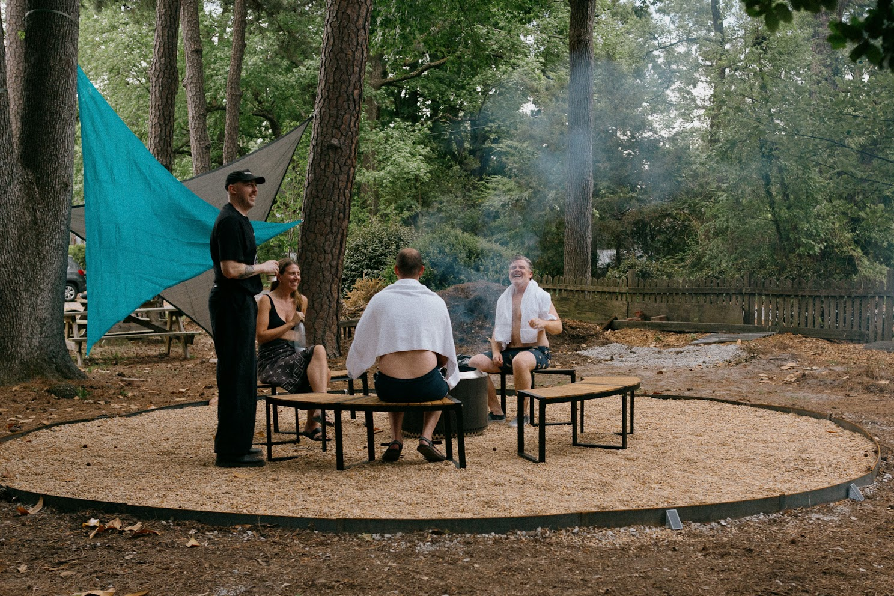
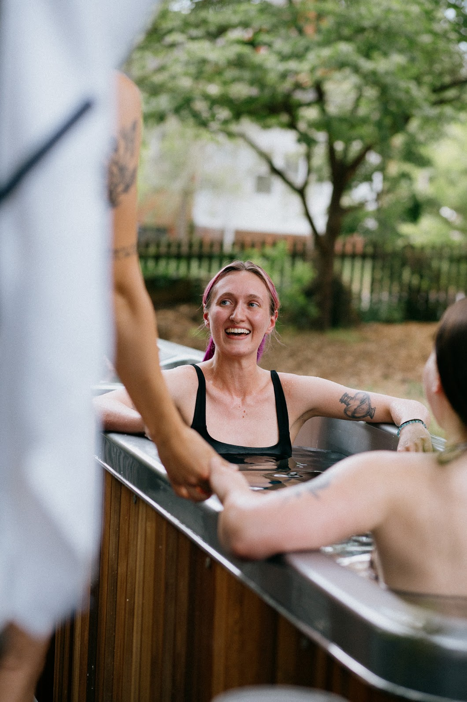
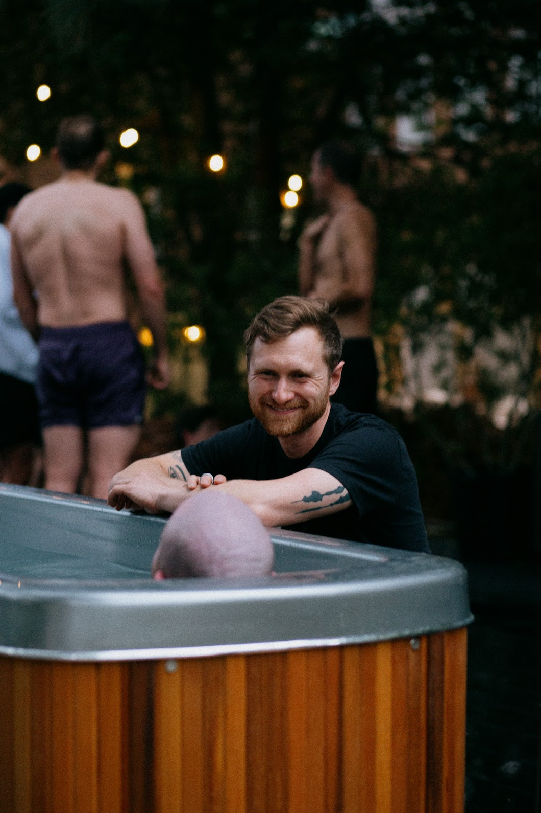

When did being
alone
become the default?
More evenings end in a quiet room.

More evenings end in a quiet room.

1 in 2 American adults report loneliness.

A practice for thousands of years,
across cultures.

Hot water. Cold water. Eye contact.
Conversation without notifications.

Come sit with us.
Bring a friend. Leave the phone in the locker.